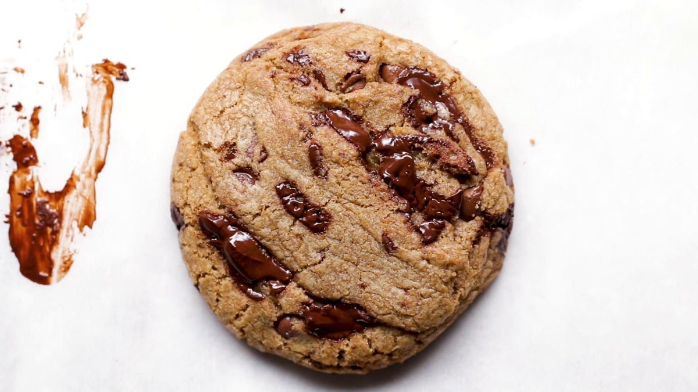

The Best Chewy Chocolate Chip Cookies
The recipe is adapted from "The Best
Chewy Chocolate Chip Cookies" by Tasty. A chocolate chip cookie that is simple yet addictive!

Description
There are a few secrets to the best classic, chewy chocolate chip cookies. Number one: Don’t use chips; instead,
opt for a mix of milk or semisweet and dark chocolate chunks. The second is to let the dough rest overnight or
longer for a more complex, toffee-like flavor. Lastly, use an ice cream scooper to get even-sized cookies every
time. And that’s it! With these little tweaks, the result is a cookie that’s textured on the outside, and soft
and gooey on the inside. Absolutely perfect!
Ingredients
- 1/2 cup granulated sugar
- 3/4 cup brown sugar
- 1 teaspoon salt
- 1/2 cup unsalted butter, melted
- 1 egg
- 1 teaspoon vanilla extract
- 1 1/4 cups all-purpose flour
- 1/2 teaspoon baking soda
- 4 oz milk or semi-sweet chocolate chunks
- 4 oz dark chocolate chunk
Steps
- In a large bowl, whisk together the sugars, salt, and butter until a paste forms with no lumps.
- Whisk in the egg and vanilla, beating until light ribbons fall off the whisk and remain for a short while
before falling back into the mixture.
- Sift in the flour and baking soda, then fold the mixture with a spatula (Be careful not to overmix, which
would cause the gluten in the flour to toughen resulting in cakier cookies).
- Fold in the chocolate chunks, then chill the dough for at least 30 minutes. For a more intense toffee-like
flavor and deeper color, chill the dough overnight. The longer the dough rests, the more complex its flavor
will be.
- Preheat oven to 350°F (180°C). Line a baking sheet with parchment paper.
- Scoop the dough with an ice-cream scoop onto a parchment paper-lined baking sheet, leaving at least 4 inches
(10 cm) of space between cookies and 2 inches (5 cm) of space from the edges of the pan so that the cookies
can spread evenly.
- Bake for 12-15 minutes, or until the edges have started to barely brown.
- Cool completely before serving.
- Enjoy!